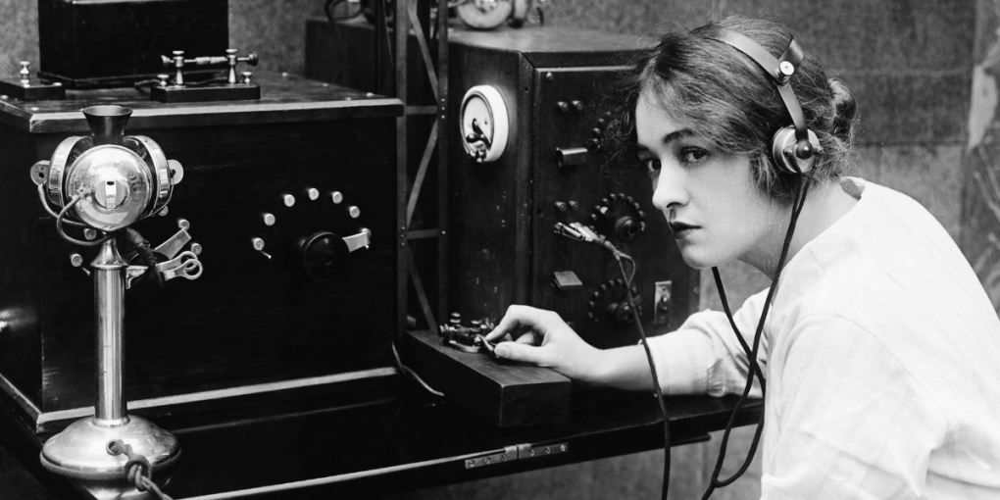
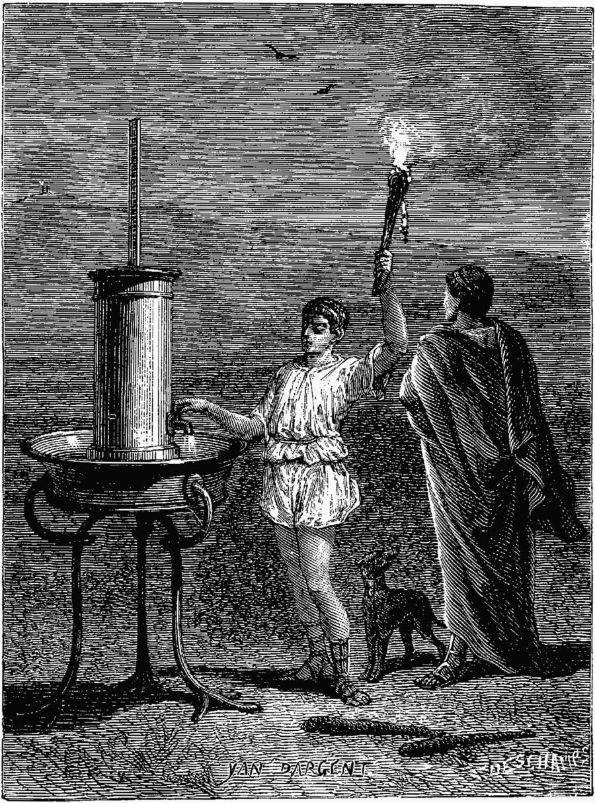
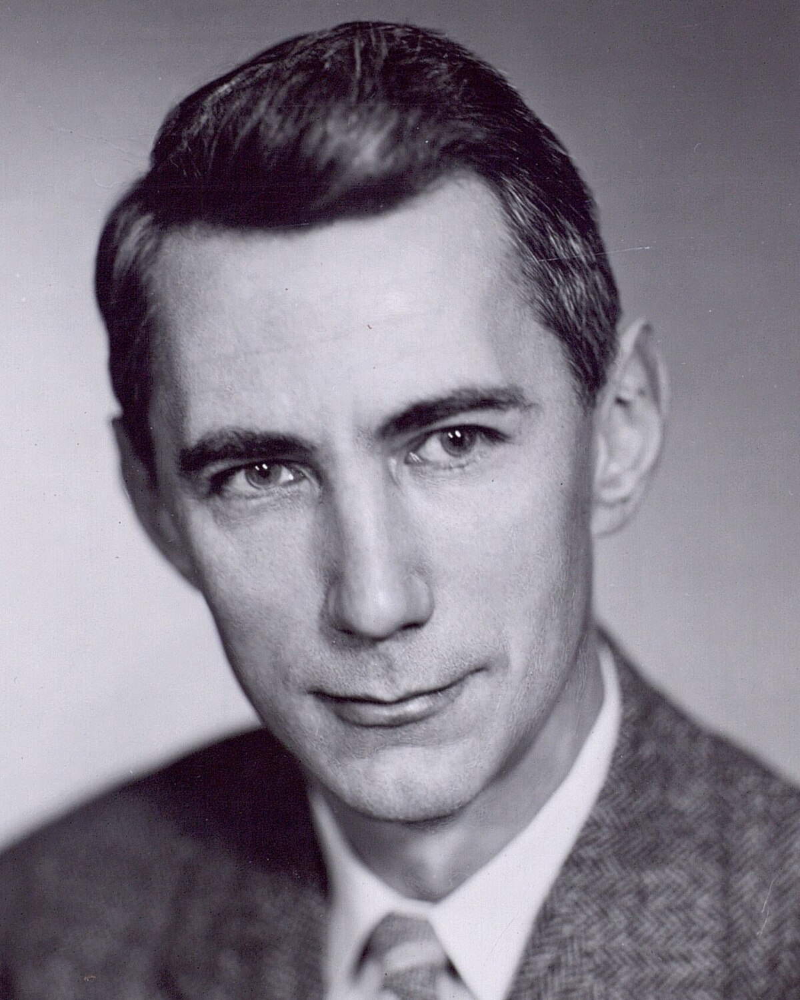

Origin of Telecommunications
 The history of telecommunications begins with visual signals such as smoke signals and optical beacons, evolving to the telegraph, telephone, radio, and now modern digital systems.
Applied Science in Telecommunications

Telecommunications is an applied science because it combines physics, mathematics, and engineering principles to build communication systems that shape modern society.
Founding Figures
Great minds like Alexander Graham Bell, Guglielmo Marconi, and Claude Shannon laid the foundation for the systems we use today. Their contributions revolutionized how we connect with each other.